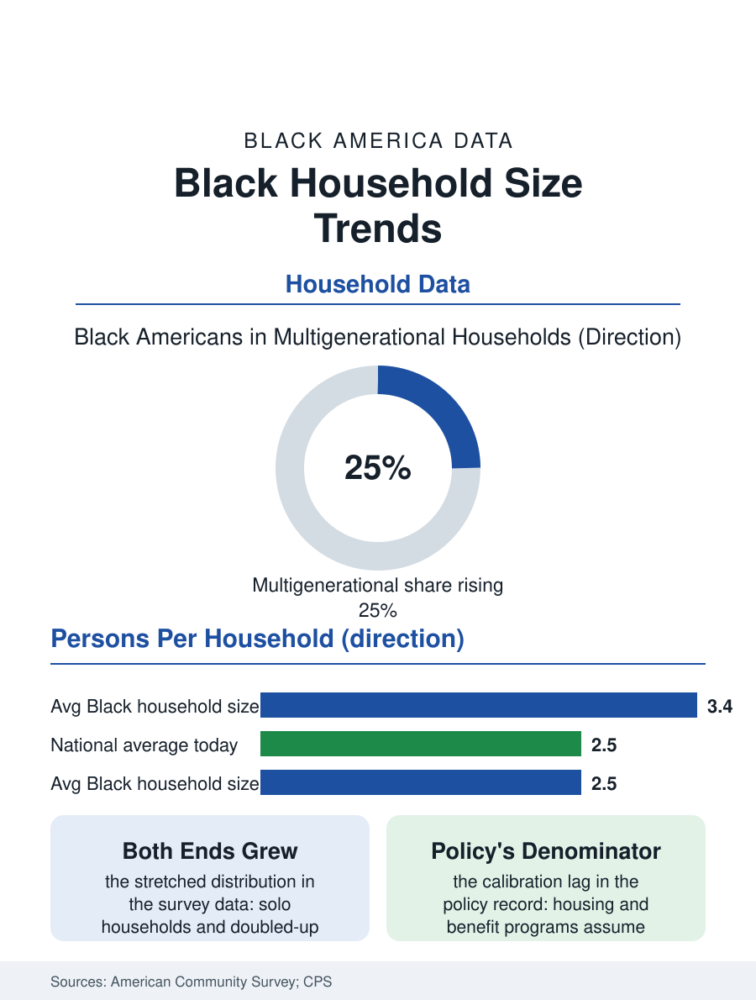

Black Census
The Shrinking Table: Black Household Size
The average Black household shrank from three and a half people toward two and a half, stretching at both ends, solo and doubled-up, as the middle thinned. The household size file.

The American household is shrinking, and the Black household, historically the largest in the national data, is shrinking fastest toward the mean. The average Black household held close to three and a half people within living memory of the survey series; recent American Community Survey cycles place it around two and a half, converging with a national average it once exceeded by half a person. This article reads the household size file, a quiet statistic that reprices everything from housing to groceries.
The Forces of Contraction
The components of the decline are the other files of this atlas, summed. Fertility fell, as the birth file records, so there are fewer children per household to count. Marriage delayed and declined, so the two-adult household that anchors the average forms later and less often. Longevity rose, so the solo elder households of the living-alone file multiply at the distribution's small end. And the economic floor moved: the apartment a young worker can rent alone, the wage that permits a household of one, arrived for a mass population within the survey's lifetime, converting what was once a family economy into millions of individual ones. The multigenerational household is the file's counter-current, and the honest data hold both currents at once: the share of Black Americans living in multigenerational households rose across the same decades, driven by housing costs, caregiving, and the grandparent economy, so the distribution stretched at both ends, more solo households and more doubled-up ones, while the classic middle, the couple with children in a house of their own, thinned as a share of the whole. The average falls because the solo end multiplied faster, but the lived reality the average conceals is polarization, and the policy built on the average misfits both ends simultaneously.
What Size Buys and Costs
Household size is an economic technology, and the consumer data price its versions precisely. The large household pools income, splits rent and utilities, internalizes childcare and eldercare that the small household must buy or forgo, and accumulates the surplus that becomes the savings file's down payment; the price it pays is privacy, autonomy, and the friction the doubling-up literature records in the doubled households' own reports of strain. The solo household buys autonomy at the solo premium the living-alone file prices. Public policy is calibrated to the sizes in ways that lag the trend: housing programs assume household definitions the doubled-up reality fits badly, since a doubled household's combined income can disqualify families who are, individually, poor; food benefit allotments scale by household with economies assumed that the actual kitchens only partly realize; and the tax code's filing statuses sort a distribution that has moved on. The market reads the data faster than the policy does: the housing industry's product mix, the apartment sizes and the packaged food portions and the car seat counts, all quietly resized across the decades toward the smaller household, and the Black consumer market, whose households remain on average the largest of the major groups even in decline, is the last mass market for the family-sized everything, a distinction the buying power file monetizes.
The Southern and Urban Geography of Size
The map of household size retains the atlas's oldest contour. Rural Southern Black households remain the largest, the multigenerational and extended forms holding their share in the Black Belt counties where land and kin density support them, while the smallest households concentrate in the professional metros and the college towns, where the young solo pattern dominates. The migration streams move size around the map: the return migrant who leaves a solo Brooklyn apartment for a Georgia house with room for her mother converts two data points at once, shrinking the New York file's solo count and swelling Georgia's multigenerational one. The projection models all point one way, continued slow decline in the average toward the low twos, with the multigenerational share stabilizing rather than reversing, since its drivers, housing cost and longevity and care, are the century's most durable trends. The household size file closes on the kitchen table the statistic abstracts. Every other number in this atlas is denominated in households somewhere: the income is household income, the wealth is household wealth, the burden is the household's rent against the household's pay. When the denominator changes shape, every ratio in the book moves, and a people whose household is changing faster than the nation's is a people whose statistics must be read with the denominator in hand. Two and a half people, on average, carry the whole Black American economy now, and the average, falling, is carrying more every year.
More in Black Census
The Black Population of the United States: Size, Definitions, and Distribution
The Black population of the United States totals 52.8 million — 15.4 percent of the nation. How the Census Bureau defines and counts the population, and where it lives.
Black Median Household Income in the United States
Black median household income stands at $56,490 in the Census Bureau's annual income report — how the figure is measured, how it compares, and what drives it.
The Black Poverty Rate: Levels, Children, and the Long Trend
The official Black poverty rate is 17.1 percent — against 11.1 percent nationally and 7.7 percent for non-Hispanic White Americans. How poverty is measured and what the data show.
Source: U.S. Census Bureau, American Community Survey and Current Population Survey household size series; Pew Research Center multigenerational household analyses.